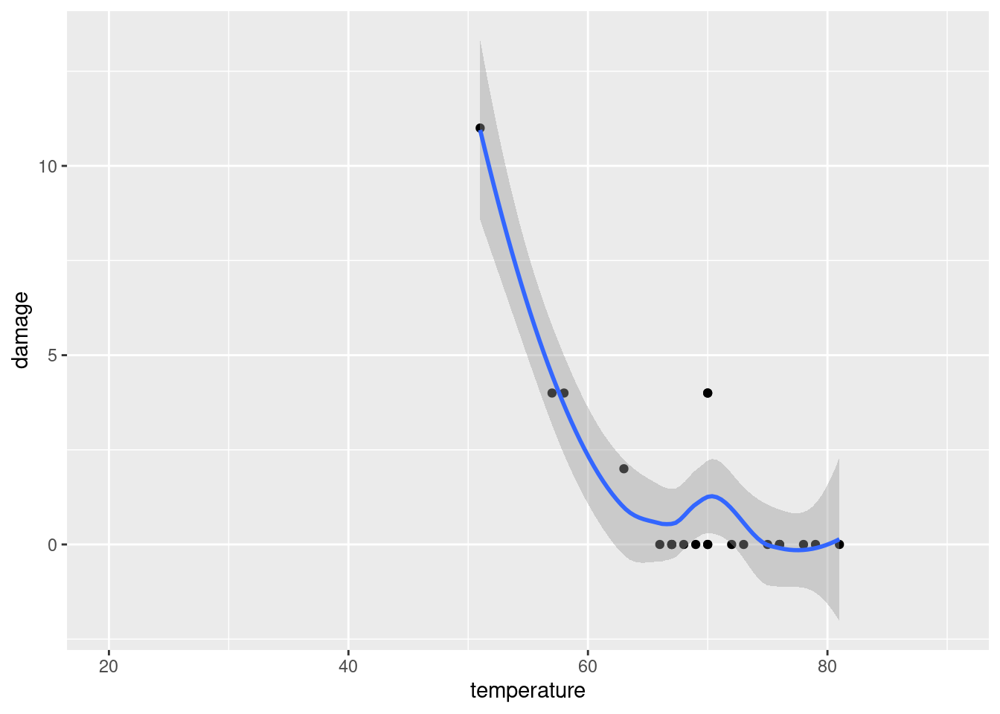

library(tidyverse)
tufte_data <- tibble(
flight = c("51-C", "41-B", "61-C", "41-C", "1", "6", "51-A", "51-D", "5", "3", "2", "9", "41-D", "51-G", "7", "8", "51-B", "61-A", "51-I", "61-B", "41-G", "51-J", "4", "51-F"),
temperature = c(51,57,58,63,66,67,67,67,68,69,70,70,70,70,72,73,75,76,76,76,78,79,80,81),
damage = c(11,4,4,2,0,0,0,0,0,0,4,0,0,4,0,0,0,0,0,0,0,0,NA,0)
)
tufte_data %>%
ggplot(aes(temperature, damage)) +
geom_point() +
geom_smooth() +
xlim(20,90)`geom_smooth()` using method = 'loess' and formula = 'y ~ x'Warning: Removed 1 rows containing non-finite values (`stat_smooth()`).Warning: Removed 1 rows containing missing values (`geom_point()`).